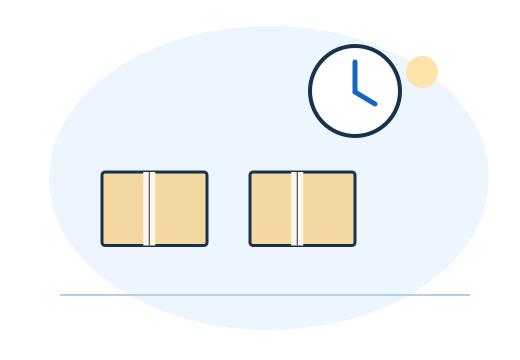

LESSON 01
「簡単に稼げる」の前に、
ここを確認。
お疲れ様です、さめちゃんです。「副業を始めたい。でも、だまされたくない」。物販が気になっている方にも、最初に知ってほしいことがあります。
「報酬を受け取るには先に送金が必要」「誰でも必ず稼げる」「今すぐ契約しないと損」。そんな誘いを受けたら、その場で支払わず、仕事内容・費用・契約条件を確認してください。
この資料で伝えたいのは、危険な誘いを見分けること。そして、家の不用品を1つ出品するような小さな実践から、自分の力を育てることです。経験を重ねて手順を整えると、作業の負担を減らせます。
「押すだけで稼げる？」
誰に何を提供するのか分からない。うまくいかない時に、何を直せばいいかも分からない。
「まず1回、やってみよう」
相手が必要とするものを届ける。その中で、できたことと改善点が自分に残る。
LESSON 02
物販も料理も、
まずは手順を覚える。
初めて作る料理は、レシピを読み、材料を探し、切る順番を考えるので時間がかかります。でも何度か作ると、「先にお湯を沸かそう」「野菜はまとめて切ろう」と工夫できるようになりますよね。
手順を見ながら、ひとつずつ試す。
迷った場所・失敗しやすい場所を知る。
まとめて準備し、探す・迷う時間を減らす。
副業も同じです。出品の説明を書く、相手に返信する、商品を梱包する。最初はゆっくりでも、一度できた手順を残すと、次に使える土台になります。
LESSON 03
物販の第一歩は、
家の不用品を1つ選ぶこと。
いきなり大きな実績や、誰も思いつかないアイデアを作る必要はありません。最初は、手順が具体的で、自分の条件でも試せることを選びます。
「再現しやすい」を見極める4つの質問
たとえば物販なら、「売れる商品を探す」だけでは大きすぎます。家にある不用品を1つ選び、状態を確認して、写真を撮るなら今日の行動にできます。
LESSON 04
出品して終わりにしない。
次に活かす5ステップ。
数だけ増やして疲れてしまうなら、一度立ち止まって大丈夫です。積み上げたいのは、作業量だけでなく、次の判断に使える経験です。
- 1つ試す
例：不用品を1つ、状態が伝わる写真と説明で出品する。
- 事実を残す
例：撮影に何分かかったか、どんな質問が来たかをメモする。
- 1か所だけ直す
例：サイズの質問が来たので、説明に実寸を追記する。
- もう一度試す
次の出品では、最初から実寸を入れる。
- 使える型を残す
確認項目をチェックリストにして、同じ抜けを減らす。
掲載した出品例は考え方を示す例です。出品や改善による販売成立を保証するものではありません。
LESSON 05
出品・梱包の時短は、
手順が分かってから。

道具を探す → 考える → 作業
梱包材の場所がバラバラ。説明文も毎回白紙。確認項目もその場で思い出す。
準備する → 個別に確認 → 作業
道具を一か所に置く。説明文の型を用意。商品ごとの状態やサイズは必ず確認する。
仮に同じ作業が30分から20分になれば、10分を次の準備や休息に使えます。空いた時間を販売機会の拡大や改善に使うことで、収入を伸ばせる可能性も生まれます。
出品・梱包を時短する順番
自分で理解する → 手順にする → 道具・仕組みを使う → 必要に応じて人に頼む。
確認すべきことが分からないまま任せると、間違いも広がりやすくなります。
LESSON 06
危険な副業を避けるために。
申し込む前の5つの確認。
無料だから危険、有料だから安心、という分け方はできません。公式ガイドなど無料で学べる情報もあります。学ぶために、最初から高額な契約をする必要はありません。
申し込む前に見るところ
迷ったら広告やメッセージを残し、信頼できる人や消費生活相談窓口に相談する選択肢もあります。
LESSON 07
今日やることは、
不用品を1つ選ぶだけでもいい。
今日は「何を始めるか決めて、1回試す」だけでも前進です。使える時間が少ない日は、写真を1枚撮る、商品のサイズを測る、確認項目を書き出す。そこまで小さくしても大丈夫です。
自分の生活の中でできる行動にする。
できたこと・困ったことを記録する。
同じ迷いや手戻りをひとつ減らす。
入力はこの端末のブラウザ内だけに保存されます。外部には送信しません。共有端末では使用後に消してください。